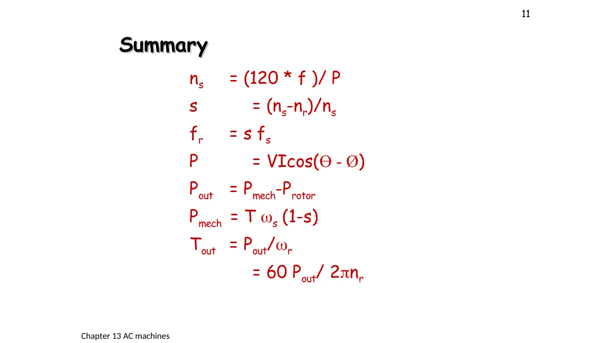
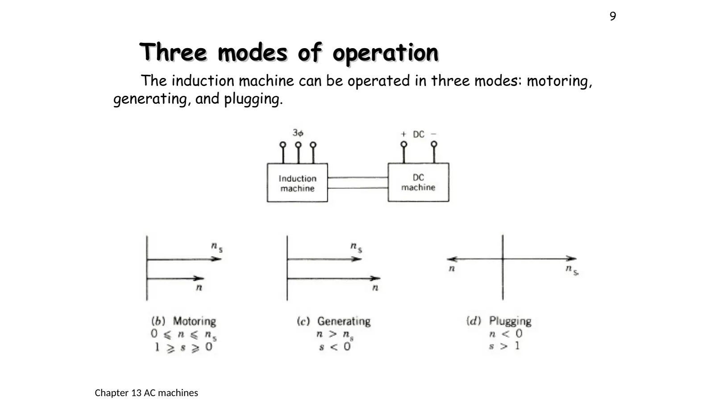
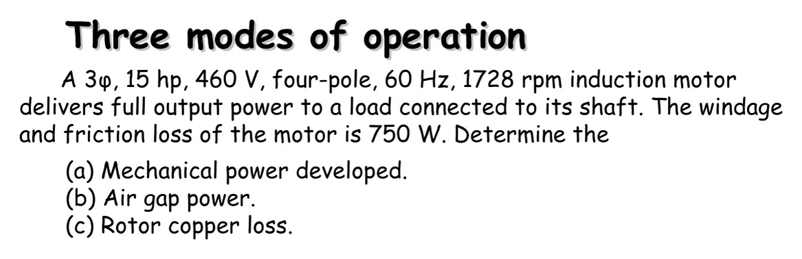

สามโหมดการทำงานและการไหลของกำลัง Motor, generator or brake: it depends on the slip
Three modes of operation and power flow Motor, generator or brake: it depends on the slip
เครื่องเหนี่ยวนำเครื่องเดียวทำงานได้สามโหมดตามความเร็วของโรเตอร์เทียบกับสนามหมุน (สไลด์หน้า 9): เป็นมอเตอร์เมื่อหมุนตามสนามแต่ช้ากว่า (0 < s < 1) เป็นเครื่องกำเนิดเมื่อถูกขับให้แซงสนาม (s < 0) และเป็นเบรกเมื่อถูกขับให้หมุนสวนสนาม (เบรกแบบ plugging, s > 1) ทุกโหมดใช้ความสัมพันธ์ชุดเดียวกัน: กำลังที่ข้ามช่องอากาศ \(P_{ag}\) แบ่งเป็นความร้อนในโรเตอร์ \(sP_{ag}\) กับกำลังกล \((1 - s)P_{ag}\) (P. C. Sen หัวข้อ 5.7 และ 5.10) หน้านี้มีภาพจำลองเส้นแรงบิด–ความเร็วครบสามโหมด (ส่วน A) ตัวอย่างในสไลด์หน้า 10 (ข้อ 1) โจทย์การไหลของกำลังจากกระแสเข้าถึงแรงบิดที่เพลาจาก P. C. Sen (ข้อ 2) และโจทย์เพิ่มเติมที่แก้วงจรสมมูลต่อเฟสด้วยตัวแก้วงจรของเว็บนี้ (ข้อ 3)
One induction machine works in three modes, set by the rotor's speed relative to the rotating field (slide p. 9): a motor when it follows the field more slowly (0 < s < 1), a generator when it is driven faster than the field (s < 0), and a brake when it is driven against the field (plugging, s > 1). Every mode uses the same relations: the power crossing the air gap, \(P_{ag}\), divides into rotor heat \(sP_{ag}\) and mechanical power \((1 - s)P_{ag}\) (P. C. Sen, sections 5.7 and 5.10). This page has the torque–speed curve through all three modes (section A), the example of slide p. 10 (problem 1), a P. C. Sen power-flow problem from the input current to the shaft torque (problem 2), and an extra problem that solves the per-phase equivalent circuit with this site's circuit solver (problem 3).
Three modes: motoring \(0 \le n \le n_s\) (\(1 \ge s \ge 0\)), generating \(n > n_s\) (\(s < 0\)) and plugging \(n < 0\) (\(s > 1\)), which follows from swapping two supply leads of a running motor (slide p. 9, section A).
The motor's power flow: the input, less the stator losses (copper and core), leaves the air-gap power \(P_{ag}\); less the rotor copper loss \(P_2 = sP_{ag}\) it leaves the mechanical power \(P_{mech}\); less the rotational losses (windage and friction) it leaves the shaft power (problems 1–2).
Low slip = good efficiency: the share of the air-gap power lost as rotor heat equals the slip, so motors are designed to run at a low slip (\(1 - s\) is called the internal efficiency).
Torque: the developed torque is \(T = P_{ag}/\omega_s = P_{mech}/\omega_m\) and the shaft torque \(T_{out} = P_{out}/\omega_r\), always with speeds in radians per second (slide p. 11, problems 2–3).

สไลด์หน้า 11: สรุปสูตรของบท · แตะรูปเพื่อขยายSlide p. 11: the chapter's formulas · tap to enlarge
Two lines of slide p. 11 need care. (1) \(P_{out} = P_{mech} - P_{rotor}\): what is taken off is the rotational loss \(P_{rot}\) (windage and friction), not the rotor loss, which was already taken off before \(P_{mech}\) (P. C. Sen Example 5.4 writes \(P_{out} = P_{mech} - P_{rot}\)). (2) \(P = VI\cos(\Theta - \varnothing)\) is the power per phase, with Θ and Ø the angles of the voltage and the current; the three-phase input is \(3V_pI_p\cos\theta = \sqrt3V_LI_L\cos\theta\) (chapter 9).
A
สามโหมดการทำงานบนเส้นแรงบิด–ความเร็ว
The three modes on the torque–speed curve
สไลด์หน้า 9 · เครื่องของ P. C. Sen Example 5.4 (460 V 4 ขั้ว 60 Hz) · P. C. Sen หัวข้อ 5.5, 5.10
Slide p. 9 · the machine of P. C. Sen Example 5.4 (460 V, four poles, 60 Hz) · P. C. Sen, sections 5.5, 5.10

ns, s < 0; (d) plugging n < 0, s > 1">
สไลด์หน้า 9: เครื่องเหนี่ยวนำต่อทางกลกับเครื่องกระแสตรงที่ใช้ขับหรือรับภาระ · แตะรูปเพื่อขยายSlide p. 9: the induction machine coupled to a dc machine that drives it or loads it · tap to enlarge
As in the test of slide p. 9, a dc machine drives the induction machine at any speed. The top graph is the induction machine's torque against speed, worked out from the equivalent circuit of the machine in problem 3, with the modes shaded. The bottom picture shows which way the power flows: purple across the air gap, green at the shaft, and red, the rotor heat, which always leaves the rotor. Move the speed through 0 rpm and through 1800 rpm.
Slide p. 10: mechanical power, air-gap power and rotor copper loss
สไลด์หน้า 10 · P. C. Sen Example 5.2 · ไม่มีเฉลยในห้อง
Slide p. 10 · P. C. Sen Example 5.2 · no class solution

สไลด์หน้า 10 · แตะรูปเพื่อขยายSlide p. 10 · tap to enlarge
โจทย์ให้กำลังที่เพลาและความเร็ว จึงต้องคิดย้อนจากเพลากลับไปที่ช่องอากาศ แผนภาพการไหลของกำลังด้านขวาคือส่วนโรเตอร์ของรูป 5.23a ของ P. C. Sen ความกว้างของแถบเป็นไปตามกำลังจริง ส่วนตัวเลขจะปรากฏเมื่อหาได้ในแต่ละขั้น ลองตอบก่อน
The problem gives the shaft power and the speed, so the work runs backwards from the shaft to the air gap. The power-flow diagram is the rotor part of P. C. Sen's Fig. 5.23a; its band widths follow the real powers, and each number appears once its step finds it. Try it first.
2
P. C. Sen Problems 5.7–5.8: จากกระแสเข้าถึงแรงบิดที่เพลา
P. C. Sen Problems 5.7–5.8: from the input current to the shaft torque
P. C. Sen, Principles of Electric Machines and Power Electronics พิมพ์ครั้งที่ 3, Problems 5.7 และ 5.8 · เพิ่มจากตำราเพื่อใช้สูตรในสไลด์หน้า 11 ครบทุกสูตร · โจทย์ใหม่ของพิมพ์ครั้งที่ 3 จึงไม่มีในคู่มือเฉลย
P. C. Sen, Principles of Electric Machines and Power Electronics, 3rd ed., Problems 5.7 and 5.8 · added from the book to use every formula of slide p. 11 · new in the 3rd edition, so they are not in the solution manual
โจทย์
เครื่องเหนี่ยวนำ 3 เฟส 460 V 60 Hz 20 kW รับกระแส 25 A ที่ตัวประกอบกำลัง 0.9 ตามหลัง เมื่อต่อกับแหล่งจ่าย 3 เฟส 460 V 60 Hz การสูญเสียในแกน 900 W การสูญเสียในทองแดงของสเตเตอร์ 1100 W ของโรเตอร์ 550 W และการสูญเสียจากลมและแรงเสียดทาน 300 W จงหา (a) กำลังในช่องอากาศ \(P_{ag}\) (b) กำลังกลที่พัฒนาได้ \(P_{mech}\) (c) กำลังออกเป็นแรงม้า (d) ประสิทธิภาพ
A 3φ, 460 V, 60 Hz, 20 kW induction machine draws 25 A at a power factor of 0.9 lagging when connected to a 3φ, 460 V, 60 Hz supply. The core loss is 900 W, the stator copper loss 1100 W, the rotor copper loss 550 W, and the friction and windage loss 300 W. Calculate (a) the air-gap power \(P_{ag}\); (b) the mechanical power developed \(P_{mech}\); (c) the output horsepower; (d) the efficiency.
Problem 5.8: the machine has 4 poles. For the same operating condition find (a) the synchronous speed; (b) the rotor speed; (c) the developed torque; (d) the output torque.
The full power-flow diagram: input (cyan) → stator losses → air-gap power (purple) → rotor copper loss → mechanical power (orange) → windage and friction → shaft power (green). Each stage's number appears with its step; steps 5–6 find the speed and the torques. Try it first.
Extra: the per-phase equivalent circuit of an induction motor at full load
P. C. Sen Example 5.4(b) · เกินเนื้อหาของสไลด์ (วงจรสมมูลอยู่ใน P. C. Sen หัวข้อ 5.7) แต่ใช้เพียงวงจรไฟสลับของบทที่ 6–9 และหม้อแปลงของบทที่ 10
P. C. Sen Example 5.4(b) · beyond the slides (the equivalent circuit is in P. C. Sen, section 5.7), but it needs only the AC circuits of chapters 6–9 and the transformer of chapter 10
A three-phase, 460 V, 1740 rpm, 60 Hz, four-pole wound-rotor induction motor has the per-phase parameters \(R_1 = 0.25\ \Omega\), \(R′_2 = 0.2\ \Omega\), \(X_1 = X′_2 = 0.5\ \Omega\), \(X_m = 30\ \Omega\). The rotational losses are 1700 W. With the rotor terminals short-circuited, find at full load (1740 rpm) the slip, the line current, the power factor, the torque and the motor efficiency.
The per-phase equivalent circuit has the shape of a transformer's (page 10.4); the difference is the rotor-side resistance \(R′_2(1 - s)/s\), which stands for the mechanical load: three times the power it takes is the motor's mechanical power. The site's circuit solver really solves this AC circuit (rms values); point at a part to read its current and power. The dots start once the current is found (step 3). Try it first.
เอกสารประกอบการสอนบทที่ 12 หน้า 9–11 · P. C. Sen บทที่ 5 (หัวข้อ 5.5, 5.7, 5.10, Examples 5.2, 5.4, Problems 5.7–5.8)
Try this 1 — three modes
In section A set 1740 rpm: a motor at 163 N·m, the purple and green arrows pointing to the shaft.
Set 1860 rpm: a negative slip and a negative torque (opposing the drive); the purple and green arrows reverse and the machine feeds the line, but the red arrow (rotor heat) still points out.
Set −600 rpm: plugging. Both the supply and the shaft push power into the rotor, so the rotor heat is the sum of the two.
Problem 2: the 900 W core loss belongs to the stator side; leave it out and the air-gap power comes out too high, and so does the slip worked out from it.
Problem 3, point at \(R′_2(1 - s)/s\): about 9907 W per phase, three times that is \(P_{mech}\). Question: with a heavier load the slip grows; does this resistance get larger or smaller?
Chapter 12 handout pp. 9–11 · P. C. Sen, chapter 5 (sections 5.5, 5.7, 5.10, Examples 5.2, 5.4, Problems 5.7–5.8)